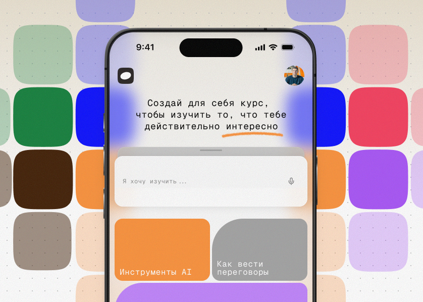
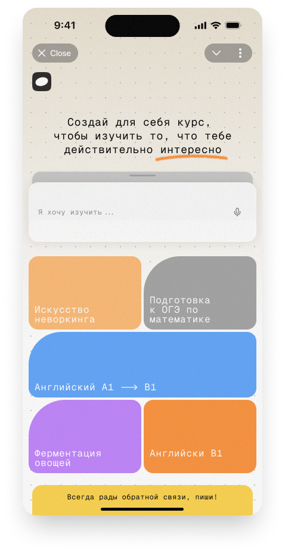
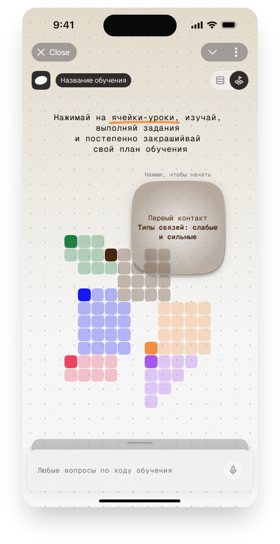
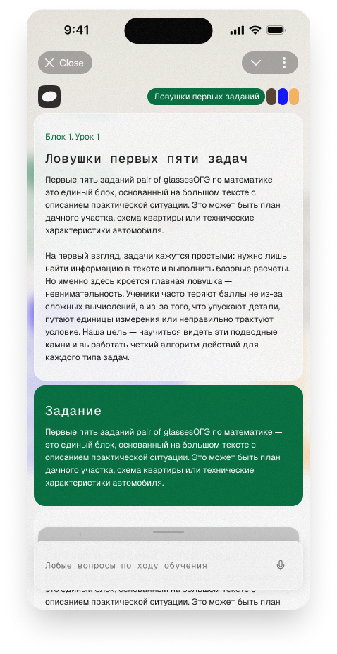
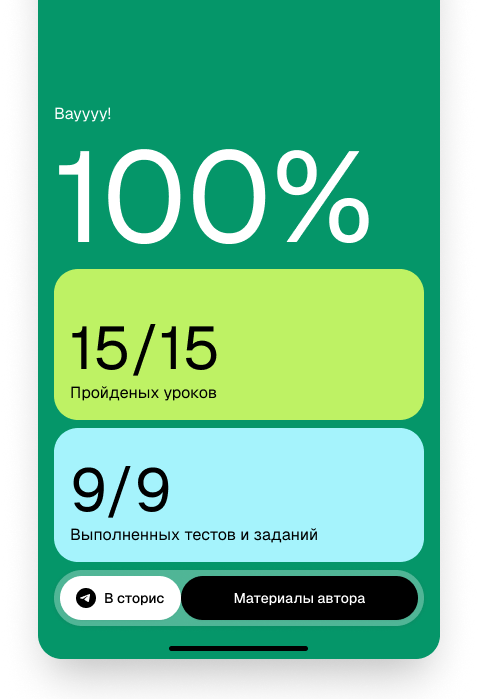

Скажите, какой навык вам нужен: AI-коуч построит программу обучения и уроки вокруг вашей работы, уровня и задач
Никаких курсов «для всех». Только нужные вам навыки, на примерах из вашей сферы, в вашем темпе. 20 минут в день.
Вы называете навык. Система оценивает уровень, находит пробелы и генерирует программу, где каждый урок привязан к вашей реальной работе. Не теория из учебника, а практика, которую можно применить уже на этой неделе.
Более 500 навыков для карьерного роста
Ваш карьерный коуч — в телефоне, в любое время

Один запрос — готовая программа
Не нужно сравнивать курсы и гадать, подойдёт или нет. Назовите навык — коуч сделает остальное.
Контекст вашей сферы с первого урока
Финансист получит примеры с цифрами, менеджер — с процессами, маркетолог — с кампаниями. Не кейсы из учебника.
20 минут в день, применяете сразу
Каждый урок заканчивается практикой, которую можно использовать на работе в тот же день.
Как это работает
Пять шагов от «хочу разобраться» до «применяю на работе».
Вы говорите, какой навык вам нужен
Аналитика, переговоры, управление командой — что угодно. Система уточнит сферу, роль, уровень и конкретную цель.

Коуч оценивает уровень и строит программу
Не с основ, а от того, что вы уже знаете. Маркетолог из e-commerce и маркетолог из B2B получат разные программы.

Каждый день — урок из вашей работы
Теория на примерах из сферы, практика, которую можно применить сегодня. Коуч адаптирует сложность под вас.

Программа адаптируется на ходу
Легко — ускорит. Сложно — объяснит иначе. Пропустили пару дней — продолжите без потери прогресса.

Навык переходит в работу
Не «выучил и забыл», а применяете каждый день. Разница заметна вам, коллегам и руководству.
Через месяц вы заметите разницу
Разговариваете на равных
Обсуждаете метрики, стратегию, подходы — на языке тех, кто принимает решения.
Расширяете зону влияния
Берёте задачи за пределами должностной инструкции — и справляетесь.
Решаете, а не делегируете вслепую
Понимаете достаточно, чтобы не зависеть от узких специалистов в каждом вопросе.
Управляете людьми осознанно
Фидбек, конфликты, мотивация — не интуитивно, а с конкретным подходом.
Чувствуете, куда двигаетесь
Вместо тревоги «надо что-то учить» — понятный маршрут и видимый рост каждую неделю.
Готовы к повышению
Не «может быть, когда-нибудь», а конкретный набор навыков, который можно показать.
Как выглядит программа на практике
Маркетолог в e-commerce → аналитика
Пришёл на митинг с готовым анализом вместо «надо спросить у аналитика».
Менеджер проектов → переговоры и презентации
Защитила бюджет проекта перед директорами — раньше терялась на таких встречах.
Почему не курс, не коуч и не ChatGPT
| Choice.Study | Курсы | Живой коуч | YouTube | ChatGPT | |
|---|---|---|---|---|---|
| Под вашу сферу | |||||
| Примеры из работы | |||||
| Помнит путь | |||||
| Доступность | 24/7 | Расписание | 1–2 ч/нед | ✓ | ✓ |
| Хард + Мягкие | |||||
| Завершение | 75% | 15% | ~60% | ~5% | ~10% |
Люди, которые уже прокачали карьерные навыки
«Нужно было срочно набрать софт-скиллы — стал тимлидом, а управлять людьми не умею. После пары уроков понял на что акцентировать внимание, как себя позиционировать, стал более уверенным. Теоретическую базу в Чойсе получил какую и хотел!»
Николай, 32
тимлид разработки, Москва
«Прокачивал проф-скиллы под собесы — хотел вырасти и сменить работу, но на интервью постоянно сыпался в базовых вещах. Понравилось, что в Чойсе не просто теория, а разбор ситуаций в виде опросников. Оффер пока не получил, но последние собесы прошли намноооого спокойнее — сам почувствовал разницу.»
Сергей, 28
менеджер по продукту, Санкт-Петербург
«Как разработчик получил материалы по новому хард-скиллу дешевле, чем какой-то курс за 300к. Теперь, если что-то не знаю, просто создаю курс и иду по нему — не смотрю 100-часовые плейлисты.»
Владимир, 34
senior backend developer, Новосибирск
«Выбрала необычную тему — как читать и составлять договоры. Чойс составил план с несколькими направлениями, я выбрала самое нужное. Практические задания укрепили теорию: одно дело читать про формулировки, другое — самой разбирать их и находить подводные камни. Уже чувствую намного больше уверенности!»
Ирина, 41
финансовый менеджер, Казань
«Дочь рассказала про Чойс и я решила попробовать. Вышла на пенсию и давно хотела заняться садом по-настоящему. Создала курс по ландшафтному дизайну — наконец понимаю как сочетать растения, выстраивать композицию. Муж шутит, что я теперь умнее агронома.»
Галина, 58
на пенсии, увлечённый садовод
«Думала, что мне нужен живой коуч. Но оказалось, что подобранные под мою роль кейсы работают не хуже. Каждый урок — конкретная рабочая ситуация, не абстрактная теория.»
Елена, 36
руководитель отдела маркетинга, Москва
Начните бесплатно — прямо сейчас
Дешевле одной встречи с ментором. Попробуйте персонального AI-коуча без оплаты.
Без карты. Попробуйте бесплатно сейчас.
Хватит откладывать рост.
Вот что вы получаете бесплатно: